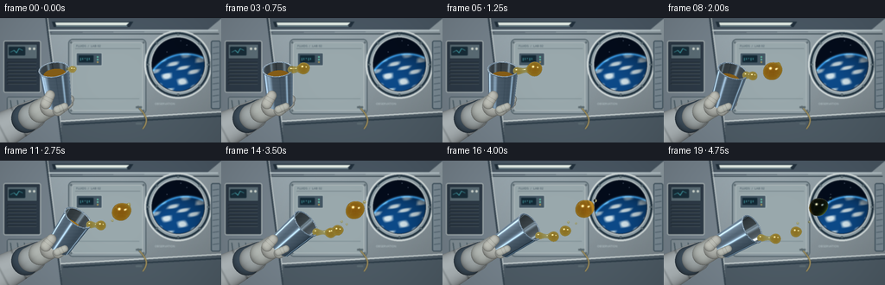
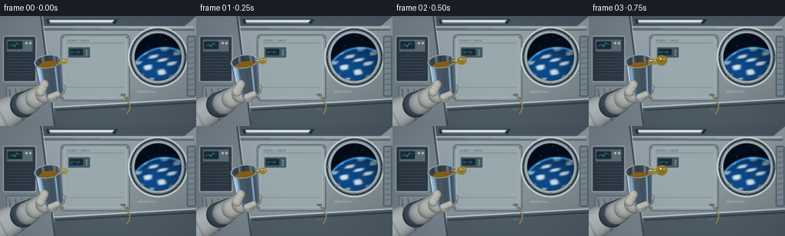

CODING AGENTS AS PIXEL WORLD MODELS
traex/GPT-6.1-Sol · phygen_002
点击播放 · 原生 RGB 像素
逐轮保存的候选
回放视频、检查图与代码变化。
每份候选均可单独播放。实际图片检查记录在下方工具轨迹中。
候选 01播放与检查图
点击播放 · 原生 RGB 像素


展开代码变化
--- 上一保存版本
+++ 本次保存版本
@@ -0,0 +1,462 @@
+from pathlib import Path
+import math
+import json
+import numpy as np
+from PIL import Image, ImageDraw, ImageFilter, ImageFont
+import artifact_io
+
+ROOT=Path(__file__).resolve().parent
+SPEC=json.loads((ROOT/'task_spec.json').read_text())
+W,H=SPEC['width'],SPEC['height']
+S=3
+WW,HH=W*S,H*S
+rng=np.random.default_rng(7421)
+
+# Camera: orthographic close-up, with a slightly soft station interior behind it.
+SCALE=43.0
+CX,CY=128.,78.
+yy,xx=np.mgrid[0:HH,0:WW].astype(np.float32)
+PX=(xx+.5)/S
+PY=(yy+.5)/S
+WX=(PX-CX)/SCALE
+WY=(CY-PY)/SCALE
+O=np.stack((WX,WY,np.full_like(WX,6.)),axis=-1)
+D=np.array([0.,0.,-1.],dtype=np.float32)
+
+def points(p): return [(round(x*S),round(y*S)) for x,y in p]
+def rect(draw,box,fill,outline=None,width=1,radius=0):
+ b=tuple(round(v*S) for v in box)
+ if radius: draw.rounded_rectangle(b,round(radius*S),fill=fill,outline=outline,width=max(1,round(width*S)))
+ else: draw.rectangle(b,fill=fill,outline=outline,width=max(1,round(width*S)))
+def line(draw,p,fill,width=1): draw.line(points(p),fill=fill,width=max(1,round(width*S)),joint='curve')
+def poly(draw,p,fill,outline=None): draw.polygon(points(p),fill=fill,outline=outline)
+def ellipse(draw,box,fill,outline=None,width=1): draw.ellipse(tuple(round(v*S) for v in box),fill=fill,outline=outline,width=max(1,round(width*S)))
+
+def station():
+ # Quiet, photographic grey-blue module, not an abstract black backdrop.
+ lum=0.99-.19*(PY/H)+.035*np.sin(PX/55)
+ noise=rng.normal(0,.7,(HH,WW))
+ arr=np.zeros((HH,WW,3),np.float32)
+ for c,v in enumerate((155,169,176)): arr[:,:,c]=v*lum+noise
+ im=Image.fromarray(np.uint8(np.clip(arr,0,255)))
+ d=ImageDraw.Draw(im)
+ # Ceiling, wall seams, and a perspective lower rail.
+ poly(d,[(0,0),(256,0),(238,15),(24,17)],(74,88,100))
+ line(d,[(0,14),(252,14)],(184,198,203),2)
+ line(d,[(0,18),(253,18)],(40,56,66),1)
+ poly(d,[(0,0),(53,0),(71,144),(0,144)],(119,132,142))
+ line(d,[(53,0),(71,144)],(54,69,80),2)
+ line(d,[(55,0),(73,144)],(198,207,208),1)
+ poly(d,[(70,118),(256,107),(256,144),(72,144)],(78,92,102))
+ line(d,[(70,119),(256,108)],(208,217,217),2)
+ line(d,[(73,123),(256,113)],(43,59,71),2)
+ # Central service panel and fasteners.
+ rect(d,(79,24,169,111),(144,158,164),(70,87,96),1,5)
+ rect(d,(83,28,165,107),(154,169,173),(186,196,197),.7,3)
+ line(d,[(87,35),(162,35)],(111,127,135),.7)
+ line(d,[(86,93),(161,93)],(119,136,143),.6)
+ for x,y in [(82,28),(166,28),(82,107),(166,107)]:
+ ellipse(d,(x-1,y-1,x+1,y+1),(67,83,91))
+ line(d,[(x-.5,y),(x+.5,y)],(192,203,204),.35)
+ # Small status strip and recessed instrumentation.
+ rect(d,(88,40,118,55),(68,87,100),(189,201,202),.7,1.5)
+ rect(d,(91,43,108,51),(20,41,53),radius=.5)
+ for k in range(5): line(d,[(93+2.5*k,46),(93+2.5*k,49-k%3)],(82,181,187),.5)
+ for y in (44,47,50): ellipse(d,(112,y,113.6,y+1.6),(108,218,184) if y!=50 else (202,173,89))
+ # Rack electronics on the port side.
+ rect(d,(4,26,47,86),(46,59,72),(187,197,197),1,2)
+ rect(d,(8,30,43,47),(93,111,120),(30,44,55),.8,1)
+ rect(d,(10,33,29,43),(24,46,58),radius=1)
+ line(d,[(12,39),(16,37),(19,40),(22,35),(26,37)],(79,190,199),.6)
+ for x in (33,38): ellipse(d,(x,34,x+2.8,36.8),(211,219,211))
+ for j in range(7):
+ rect(d,(8,51+j*4,42,52+j*4),(29,40,49),radius=.3)
+ line(d,[(9,52+j*4),(42,52+j*4)],(124,140,145),.35)
+ rect(d,(8,91,49,116),(132,145,152),(54,72,83),.7,2)
+ for x in (12,20,28,36,44): line(d,[(x,95),(x+2,110)],(61,80,90),1)
+ # Recessed orbital observation window, with concentric metal seals.
+ ellipse(d,(167,14,245,93),(70,87,100),(214,222,222),2)
+ ellipse(d,(170,17,242,90),(146,161,168),(29,47,59),1.8)
+ ellipse(d,(174,21,238,86),(22,33,47),(195,205,207),1.4)
+ win=Image.new('RGB',(WW,HH),(3,10,23))
+ a=np.zeros((HH,WW,3),np.float32)
+ a[:]=[4,12,27]
+ ex,ey=215.,89.
+ rad=48.
+ dx=PX-ex;dy=PY-ey
+ rr=np.sqrt(dx*dx+dy*dy)
+ earth=rr<rad
+ nz=np.sqrt(np.maximum(0,1-(rr/rad)**2))
+ sun=np.clip(.32+.6*nz-.006*dx-.004*dy,.15,1)
+ # Blue sea, irregular cloud belts and a pale atmosphere at the limb.
+ bands=np.sin(PX*.27+PY*.45+1.3*np.sin(PY*.22))+np.sin(PX*.14-PY*.38)
+ cloud=np.clip((bands-.15)*.75,0,1)*np.clip(.4+nz,0,1)
+ for c,(sea,white) in enumerate(zip((13,75,139),(215,232,239))):
+ col=(sea*(1-cloud)+white*cloud)*sun
+ a[:,:,c]=np.where(earth,col,a[:,:,c])
+ atm=np.exp(-((rr-(rad-.4))/1.3)**2)
+ a+=atm[:,:,None]*np.array([49,110,148])
+ win=Image.fromarray(np.uint8(np.clip(a,0,255)))
+ wd=ImageDraw.Draw(win)
+ for x,y,r in [(182,31,.45),(209,26,.3),(230,34,.35),(193,39,.25),(216,31,.25)]: ellipse(wd,(x-r,y-r,x+r,y+r),(167,187,210))
+ mask=Image.new('L',(WW,HH));md=ImageDraw.Draw(mask);ellipse(md,(176,23,236,84),255)
+ im.paste(win,(0,0),mask)
+ d=ImageDraw.Draw(im)
+ # Window frame bolt heads, with obvious interior context.
+ for ang in range(0,360,45):
+ th=math.radians(ang);x=206+35*math.cos(th);y=53.5+35*math.sin(th)
+ ellipse(d,(x-1.3,y-1.3,x+1.3,y+1.3),(62,79,88))
+ line(d,[(x-.7,y-.2),(x+.7,y+.2)],(192,203,206),.5)
+ # Light strips on overhead brackets.
+ poly(d,[(60,4),(154,4),(150,10),(62,10)],(33,48,60))
+ poly(d,[(64,5),(149,5),(146,8),(65,8)],(231,241,234))
+ line(d,[(65,9),(147,9)],(173,206,212),.7)
+ rect(d,(244,26,255,105),(124,140,150),(51,71,84),1,2)
+ for y in range(34,100,7): line(d,[(246,y),(253,y-1)],(67,86,98),1)
+ # Stowed yellow cable traces curve around the laboratory panel.
+ pp=[]
+ for q in np.linspace(0,1,80): pp.append((159+10*np.sin(q*2.5),102+26*q))
+ line(d,pp,(46,59,66),2.2);line(d,pp,(183,159,94),1.2)
+ for y in (102,121): rect(d,(157,y,164,y+2),(93,108,114),radius=.4)
+ try:
+ font=ImageFont.truetype('/usr/share/fonts/truetype/dejavu/DejaVuSans.ttf',int(3.6*S))
+ d.text((88*S,30*S),'FLUIDS / LAB 02',font=font,fill=(67,86,98))
+ d.text((179*S,97*S),'OBSERVATION',font=font,fill=(184,199,203))
+ except OSError: pass
+ # Lens depth of field; the objects will stay tack sharp.
+ im=im.filter(ImageFilter.GaussianBlur(.48*S))
+ ar=np.asarray(im).astype(np.float32)
+ vign=np.clip(1-.16*((PX-134)/171)**2-.09*((PY-69)/110)**2,.72,1)
+ return np.uint8(ar*vign[:,:,None])
+
+BG=station()
+
+def normalize(v):
+ return v/(np.linalg.norm(v,axis=-1,keepdims=True)+1e-9)
+
+def environment(v):
+ # A simple analytic reflection of the bright rails and cool space-station walls.
+ z=v[...,2];y=v[...,1];x=v[...,0]
+ base=np.stack((.21+.16*np.maximum(y,0),.27+.17*np.maximum(y,0),.32+.18*np.maximum(y,0)),axis=-1)
+ # Reflective white overhead light, broad panel, and thin dark rack stripe.
+ light1=np.exp(-((y-.66)/.055)**2-((x+.26)/.74)**8)*1.25
+ light2=np.exp(-((x+.70)/.105)**2-((y-.1)/.8)**4)*.60
+ light3=np.exp(-((y+.57)/.075)**2-((x-.20)/1.0)**8)*.40
+ panel=.17*np.exp(-((x-.4)/.7)**2-((y-.1)/.45)**2)
+ base+=light1[...,None]*np.array([1,.99,.88])
+ base+=light2[...,None]*np.array([.78,.9,1.])
+ base+=light3[...,None]*np.array([.75,.9,1.])
+ base+=panel[...,None]*np.array([.8,.9,1])
+ shadow=np.exp(-((x-.22)/.07)**2-((y+.1)/.72)**8)*.17
+ base-=shadow[...,None]
+ return np.maximum(base,0)
+
+def shade_metal(n,p,inside=False):
+ v=np.zeros_like(n);v[...,2]=1
+ ref=2*n[...,2,None]*n-v
+ env=environment(ref)
+ # Directional broad softbox, brushed anisotropy, fine machining marks.
+ key=normalize(np.array([-.5,.7,1.],np.float32))
+ nl=np.maximum(np.sum(n*key,axis=-1),0)
+ half=normalize(key+np.array([0.,0.,1.]))
+ spec=np.maximum(np.sum(n*half,axis=-1),0)**95
+ f=.62+.34*(1-np.abs(n[...,2]))**4
+ cols=env*(.75+f[...,None]*.50)+nl[...,None]*np.array([.12,.13,.14])+spec[...,None]*.65
+ scratch=.015*np.sin(p[...,1]*320+p[...,0]*1.5)+.005*np.sin(p[...,1]*880)
+ cols+=scratch[...,None]
+ if inside: cols=cols*.62+np.array([.045,.036,.018])
+ return np.clip(cols*255,0,255)
+
+def cup_geometry(frac):
+ # Cup is gently rotated outward, with its mouth always visible to the camera.
+ theta=math.radians(-8+68*(.5-.5*math.cos(math.pi*frac)))
+ a=np.array([math.sin(theta)*.875,math.cos(theta)*.875,.484],np.float32)
+ a/=np.linalg.norm(a)
+ base=np.array([(68-CX)/SCALE,(CY-99)/SCALE, .10],np.float32)
+ return base,a,1.05,.345,.405
+
+
+def render_cup(image,frac):
+ base,a,L,r0,r1=cup_geometry(frac)
+ q=O-base
+ t0=np.sum(q*a,axis=-1)
+ td=float(np.dot(D,a))
+ qper=q-t0[...,None]*a
+ dper=D-td*a
+ k=(r1-r0)/L
+ depth=np.full((HH,WW),np.inf,np.float32)
+ norm=np.zeros((HH,WW,3),np.float32)
+ material=np.zeros((HH,WW),np.uint8)
+ def hit(dist,n,valid,mat):
+ sel=valid&(dist>0)&(dist<depth)
+ depth[sel]=dist[sel]
+ if np.ndim(n)==1: norm[sel]=n
+ else: norm[sel]=n[sel]
+ material[sel]=mat
+ for rad,inner in [(r0,False),(r0-.027,True)]:
+ A=np.sum(dper*dper)-(k*td)**2
+ B=2*(np.sum(qper*dper,axis=-1)-(rad+k*t0)*k*td)
+ C=np.sum(qper*qper,axis=-1)-(rad+k*t0)**2
+ disc=B*B-4*A*C
+ sd=np.sqrt(np.maximum(disc,0))
+ for sign in (-1,1):
+ dist=(-B+sign*sd)/(2*A)
+ height=t0+dist*td
+ radial=qper+dist[...,None]*dper
+ n=normalize(normalize(radial)-k*a)
+ if inner: n=-n
+ valid=(disc>=0)&(height>=.03 if inner else height>=0)&(height<=L)
+ hit(dist,n,valid,2 if inner else 1)
+ # Rolled lip, bottom, and a recessed amber oil surface inside the cup.
+ for h,lo,hi,mat,n in [(L,r1-.029,r1+.004,1,a),(0,0,r0,1,-a),(.04,0,r0-.03,2,a),(L-.14-.32*frac,0,r0-.04,3,a)]:
+ dist=(h-t0)/td
+ v=q+dist[...,None]*D-h*a
+ rr=np.linalg.norm(v,axis=-1)
+ hit(dist,n,(rr>=lo)&(rr<=hi),mat)
+ # Ring tube adds a very slim polished raised edge, modeled as small round segments.
+ u=normalize(np.cross(a,np.array([0,0,1],np.float32)))
+ v=np.cross(a,u)
+ rim=base+a*L
+ for angle in np.linspace(0,2*np.pi,112,endpoint=False):
+ c=rim+r1*(u*np.cos(angle)+v*np.sin(angle))
+ ox=O[...,0]-c[0];oy=O[...,1]-c[1]
+ disk=.018**2-ox*ox-oy*oy
+ zz=np.sqrt(np.maximum(disk,0))
+ z=c[2]+zz
+ dist=6-z
+ n=np.stack((ox,oy,zz),axis=-1)/.018
+ hit(dist,n,disk>0,1)
+ valid=np.isfinite(depth)
+ p=O+np.where(valid,depth,0)[...,None]*D
+ color=shade_metal(norm,p)
+ inside=material==2
+ color[inside]=shade_metal(norm[inside],p[inside],True)
+ oil=material==3
+ if oil.any():
+ ref=2*norm[...,2,None]*norm-np.array([0,0,1])
+ ecol=environment(ref)
+ oilcol=np.array([104,65,12])+ecol*np.array([80,65,23])
+ color[oil]=oilcol[oil]
+ image[valid]=color[valid]
+ return image,depth,(base,a,L,r0,r1)
+
+
+def capsule_mask(p1,p2,r1,r2):
+ vx=p2[0]-p1[0];vy=p2[1]-p1[1]
+ u=np.clip(((PX-p1[0])*vx+(PY-p1[1])*vy)/(vx*vx+vy*vy),0,1)
+ dx=PX-(p1[0]+u*vx);dy=PY-(p1[1]+u*vy)
+ rad=r1+(r2-r1)*u
+ rr=np.sqrt(dx*dx+dy*dy)
+ return rr/rad,dx/rad,dy/rad,u
+
+
+def padded(image,p1,p2,r1,r2,base=(199,205,201),gain=1.,seam=False):
+ q,nx,ny,u=capsule_mask(p1,p2,r1,r2)
+ mask=q<=1
+ nz=np.sqrt(np.maximum(0,1-q*q))
+ lighting=.39+.46*nz+.15*np.maximum(-nx*.6-ny*.8,0)
+ fabric=.007*(np.sin(PX*9.7)+np.sin(PY*13.2))+.007*np.sin(PX*32+PY*21)
+ col=np.array(base)[None,None,:]*(lighting+fabric)[...,None]*gain
+ if seam:
+ stitch=np.exp(-((u-.7)/.025)**2)*.12+np.exp(-((u-.32)/.023)**2)*.10
+ col-=stitch[...,None]*255
+ image[mask]=np.clip(col[mask],0,255)
+ return image
+
+
+def glove_background(image,frac):
+ padded(image,(-14,139),(37,112),23,17,base=(192,201,204),seam=True)
+ padded(image,(30,116),(44,108),17,14,base=(72,91,107))
+ padded(image,(36,114),(46,107),15,13,base=(185,194,195))
+ padded(image,(46,108),(59,100),13,13,base=(201,207,202))
+ padded(image,(58,102),(70,100),12,10,base=(208,211,204))
+ # Fingers behind the lower body of the cup.
+ padded(image,(67,107),(79,98),6.3,6.1,base=(203,207,199),seam=True)
+ padded(image,(67,101),(81,94),5.5,5.0,base=(206,211,204),seam=True)
+ return image
+
+
+def glove_front(image,frac):
+ # Visible thumb and the narrow curled lower finger, without covering the oil lip.
+ padded(image,(53,99),(58+3*frac,89+3*frac),6.4,5.6,base=(217,219,210),seam=True)
+ padded(image,(66,106),(75,102),4.4,4.0,base=(214,218,209),seam=True)
+ return image
+
+
+def oil_shapes(frac,geometry):
+ base,a,L,r0,r1=geometry
+ # Exit through the outermost lip, rather than falling down in an Earth-gravity arc.
+ rim=base+a*L
+ outward=normalize(np.array([1.,-.1,.08],np.float32)-a*np.dot(a,np.array([1.,-.1,.08])))
+ lip=rim+outward*(r1-.035)+np.array([0,0,.035])
+ t=frac*4.75
+ spheres=[]
+ def add(c,r): spheres.append((np.array(c,dtype=np.float32),float(r)))
+ # Developing meniscus clinging to the pouring lip.
+ amp=min(1,t/.7)
+ add(lip,.045+.055*amp)
+ # First lobe stays attached on a stretching neck, then pinches off and coasts.
+ emit=lip+np.array([.06,-.005,.012])
+ if t<1.8:
+ length=.075+.52*(t/1.8)**1.12
+ end=emit+np.array([length,.055*math.sin(t*1.1),.055])
+ rad=.065+.17*min(1,t/1.6)
+ for u in np.linspace(0,1,9):
+ c=emit+(end-emit)*u
+ r=.078-.027*np.sin(np.pi*u)+.065*u**4
+ add(c,r*max(.55,amp))
+ add(end,rad)
+ add(end+np.array([.06,.024,-.01]),rad*.64)
+ else:
+ # Released masses retain their volume and drift in almost straight paths.
+ # Anchor birth coordinates to the cup at the exact release time.
+ gb=cup_geometry(1.8/4.75);bb,aa,ll,rr,ro=gb
+ rb=bb+aa*ll
+ ob=normalize(np.array([1.,-.1,.08])-aa*np.dot(aa,np.array([1.,-.1,.08])))
+ born=rb+ob*(ro-.035)+np.array([.675,.052,.10])
+ age=t-1.8
+ end=born+np.array([.45*age,.065*age,.005*age])
+ # Small capillary oscillation, settling toward a sphere.
+ wave=.027*np.cos(age*6)*np.exp(-age*.6)
+ add(end,.238)
+ add(end+np.array([.09+wave,.048,-.015]),.175)
+ add(end+np.array([-.065,-.05+wave,.012]),.164)
+ # Tiny satellites from the broken thread, going sideways/upwards rather than down.
+ add(born+np.array([.16+.51*age,.19+.08*age,.03]),.045)
+ add(born+np.array([-.08+.29*age,-.14-.035*age,.09]),.036)
+ # A fresh, very slow coherent filament continues to leave the tilted cup.
+ length=.10+.15*min(age,1.6)
+ end2=emit+np.array([length,-.018,.018])
+ for u in np.linspace(0,1,8):
+ radius=.064-.023*np.sin(np.pi*u)+.035*u**4
+ add(emit+(end2-emit)*u,radius)
+ add(end2,.10+.028*min(age,1.3))
+ if t>3.2:
+ g=cup_geometry(3.2/4.75);b2,a2,l2,_,r2=g
+ out2=normalize(np.array([1.,-.1,.08])-a2*np.dot(a2,np.array([1.,-.1,.08])))
+ born2=b2+a2*l2+out2*(r2-.035)+np.array([.52,-.018,.10])
+ age2=t-3.2
+ add(born2+np.array([.34*age2,-.035*age2,.01]),.143)
+ add(born2+np.array([.34*age2+.075,-.035*age2+.01,.01]),.08)
+ add(born2+np.array([.43*age2+.22,.135+age2*.05,.01]),.033)
+ return spheres
+
+
+def sdf(p,spheres,smooth=.055):
+ dist=np.full(p.shape[:-1],20.,np.float32)
+ for center,r in spheres:
+ q=np.linalg.norm(p-center,axis=-1)-r
+ h=np.maximum(smooth-np.abs(dist-q),0)/smooth
+ dist=np.minimum(dist,q)-h*h*smooth*.25
+ return dist
+
+
+def render_oil(image,frac,geometry,cup_depth):
+ spheres=oil_shapes(frac,geometry)
+ centers=np.array([c for c,r in spheres]);radii=np.array([r for c,r in spheres])
+ # Work only on rays inside the close bounding rectangle of the emitted oil.
+ lo=np.min(centers-radii[:,None]-.08,axis=0);hi=np.max(centers+radii[:,None]+.08,axis=0)
+ xmin=max(0,int((lo[0]*SCALE+CX)*S)-2);xmax=min(WW,int((hi[0]*SCALE+CX)*S)+3)
+ ymin=max(0,int((CY-hi[1]*SCALE)*S)-2);ymax=min(HH,int((CY-lo[1]*SCALE)*S)+3)
+ orig=O[ymin:ymax,xmin:xmax]
+ shape=orig.shape[:2]
+ flat=orig.reshape(-1,3)
+ travel=np.full(len(flat),6-hi[2],np.float32)
+ end=6-lo[2]
+ active=np.ones(len(flat),bool);hits=np.zeros(len(flat),bool)
+ for step in range(90):
+ idx=np.flatnonzero(active)
+ if not len(idx): break
+ p=flat[idx]+travel[idx,None]*D
+ ds=sdf(p,spheres)
+ found=ds<.00085
+ hits[idx[found]]=True
+ active[idx[found]]=False
+ advance=idx[~found]
+ travel[advance]+=np.maximum(ds[~found]*.87,.00035)
+ active[travel>end]=False
+ idx=np.flatnonzero(hits)
+ if len(idx)==0: return image
+ pos=flat[idx]+travel[idx,None]*D
+ normal=np.empty_like(pos)
+ eps=.001
+ for axis in range(3):
+ off=np.zeros(3,np.float32);off[axis]=eps
+ normal[:,axis]=sdf(pos+off,spheres)-sdf(pos-off,spheres)
+ normal=normalize(normal)
+ normal[:,2]=np.maximum(normal[:,2],.001)
+ normal=normalize(normal)
+ # Physically inspired dielectric Fresnel and background refraction. Oil n=1.47.
+ cos=normal[:,2]
+ fres=.036+(.964)*(1-cos)**5
+ eta=1/1.47
+ kval=1-eta*eta*(1-cos*cos)
+ refr=eta*D+(eta*cos-np.sqrt(np.maximum(kval,0)))[:,None]*normal
+ # Trace the back surface along the refracted ray to estimate absorption and lens power.
+ pback=pos+refr*.004
+ traveled=np.full(len(idx),.004,np.float32)
+ live=np.ones(len(idx),bool)
+ for i in range(45):
+ ids=np.flatnonzero(live)
+ if not len(ids): break
+ ds=sdf(pback[ids],spheres)
+ out=ds>=.0004
+ live[ids[out]]=False
+ still=ids[~out]
+ if len(still):
+ delta=np.maximum(-ds[~out]*.8,.0015)
+ pback[still]+=refr[still]*delta[:,None]
+ traveled[still]+=delta
+ live[traveled>1.0]=False
+ # Lens of the liquid in front of the wall, slightly magnifying and distorting it.
+ shiftx=(-normal[:,0]*(.07+.28*traveled))*SCALE*S
+ shifty=(normal[:,1]*(.07+.28*traveled))*SCALE*S
+ rows,cols=np.unravel_index(idx,shape)
+ u=np.clip((cols+xmin+shiftx).astype(int),0,WW-1)
+ v=np.clip((rows+ymin+shifty).astype(int),0,HH-1)
+ bg=BG[v,u].astype(np.float32)/255
+ absorb=np.exp(-traveled[:,None]*np.array([.28,1.43,5.8]))
+ transmitted=bg*absorb
+ # Golden internal scattering keeps the material unmistakably amber oil.
+ transmitted+=np.array([.30,.125,.008])*(1-absorb)*.24
+ reflect=2*cos[:,None]*normal-np.array([0,0,1])
+ env=environment(reflect)
+ color=transmitted*(1-fres[:,None])+env*fres[:,None]
+ # Crisp finite-area ceiling light reflections on the glossy liquid surface.
+ h1=normalize(np.array([-.35,.58,1.65],np.float32))
+ h2=normalize(np.array([.66,.36,1.35],np.float32))
+ sp1=np.maximum(normal@h1,0)**110
+ sp2=np.maximum(normal@h2,0)**210
+ color+=sp1[:,None]*np.array([1.04,1.02,.84])+sp2[:,None]*np.array([.65,.72,.73])
+ # Reflected warm rim and thin bright limb against the darker module.
+ edge=(1-cos)**2
+ color+=edge[:,None]*np.array([.09,.055,.008])
+ color=np.clip(color*255,0,255)
+ cup=cup_depth[ymin:ymax,xmin:xmax].reshape(-1)
+ visible=travel[idx]<cup[idx]+.002
+ patch=image[ymin:ymax,xmin:xmax]
+ patch[rows[visible],cols[visible]]=color[visible]
+ return image
+
+
+def main():
+ frames=[]
+ for i in range(SPEC['frames']):
+ frac=i/(SPEC['frames']-1)
+ image=BG.astype(np.float32).copy()
+ image=glove_background(image,frac)
+ image,depth,g=render_cup(image,frac)
+ image=glove_front(image,frac)
+ image=render_oil(image,frac,g,depth)
+ # Gentle film response and fine sensor grain, fixed in space to avoid flicker.
+ image=np.clip(image,0,255).astype(np.uint8)
+ out=Image.fromarray(image).resize((W,H),Image.Resampling.LANCZOS)
+ frames.append(np.asarray(out))
+ print(f'frame {i+1:02d}/{SPEC["frames"]}',flush=True)
+ artifact_io.save(np.stack(frames).astype(np.uint8),ROOT)
+ # Also provide a standard RGB video for convenient playback, if the local encoder exists.
+ import shutil, subprocess
+ if shutil.which('ffmpeg'):
+ subprocess.run(['ffmpeg','-y','-loglevel','error','-framerate',str(SPEC['fps']),'-i',str(ROOT/'frames'/'%02d.png'),'-c:v','libx264','-crf','16','-pix_fmt','yuv420p','-movflags','+faststart',str(ROOT/'video.mp4')],check=True)
+
+if __name__=='__main__': main()
可观测工具轨迹
实际执行的命令与返回图片。
命令 1exit 0
/bin/bash -lc "ls -la && cat prompt.txt && printf '\\n--- RULES ---\\n' && cat GENERATION_RULES.md && printf '\\n--- SPEC ---\\n' && cat task_spec.json"
命令 2exit 0
/bin/bash -lc "cat artifact_io.py && printf '\\n--- AVAILABLE ---\\n' && python - <<'PY' import importlib.util for x in ['numpy','PIL','scipy']: print(x, bool(importlib.util.find_spec(x))) PY"
命令 3exit 1
/bin/bash -lc "which ffmpeg || true && cat > generate.py <<'PY'
from pathlib import Path
import math
import json
import numpy as np
from PIL import Image, ImageDraw, ImageFilter, ImageFont
import artifact_io
ROOT=Path(__file__).resolve().parent
SPEC=json.loads((ROOT/'task_spec.json').read_text())
W,H=SPEC['width'],SPEC['height']
S=3
WW,HH=W*S,H*S
rng=np.random.default_rng(7421)
# Camera: orthographic close-up, with a slightly soft station interior behind it.
SCALE=43.0
CX,CY=128.,78.
yy,xx=np.mgrid[0:HH,0:WW].astype(np.float32)
PX=(xx+.5)/S
PY=(yy+.5)/S
WX=(PX-CX)/SCALE
WY=(CY-PY)/SCALE
O=np.stack((WX,WY,np.full_like(WX,6.)),axis=-1)
D=np.array([0.,0.,-1.],dtype=np.float32)
def points(p): return [(round(x*S),round(y*S)) for x,y in p]
def rect(draw,box,fill,outline=None,width=1,radius=0):
b=tuple(round(v*S) for v in box)
if radius: draw.rounded_rectangle(b,round(radius*S),fill=fill,outline=outline,width=max(1,round(width*S)))
else: draw.rectangle(b,fill=fill,outline=outline,width=max(1,round(width*S)))
def line(draw,p,fill,width=1): draw.line(points(p),fill=fill,width=max(1,round(width*S)),joint='curve')
def poly(draw,p,fill,outline=None): draw.polygon(points(p),fill=fill,outline=outline)
def ellipse(draw,box,fill,outline=None,width=1): draw.ellipse(tuple(round(v*S) for v in box),fill=fill,outline=outline,width=max(1,round(width*S)))
def station():
# Quiet, photographic grey-blue module, not an abstract black backdrop.
lum=0.99-.19*(PY/H)+.035*np.sin(PX/55)
noise=rng.normal(0,.7,(HH,WW))
arr=np.zeros((HH,WW,3),np.float32)
for c,v in enumerate((155,169,176)): arr[:,:,c]=v*lum+noise
im=Image.fromarray(np.uint8(np.clip(arr,0,255)))
d=ImageDraw.Draw(im)
# Ceiling, wall seams, and a perspective lower rail.
poly(d,[(0,0),(256,0),(238,15),(24,17)],(74,88,100))
line(d,[(0,14),(252,14)],(184,198,203),2)
line(d,[(0,18),(253,18)],(40,56,66),1)
poly(d,[(0,0),(53,0),(71,144),(0,144)],(119,132,142))
line(d,[(53,0),(71,144)],(54,69,80),2)
line(d,[(55,0),(73,144)],(198,207,208),1)
poly(d,[(70,118),(256,107),(256,144),(72,144)],(78,92,102))
line(d,[(70,119),(256,108)],(208,217,217),2)
line(d,[(73,123),(256,113)],(43,59,71),2)
# Central service panel and fasteners.
rect(d,(79,24,169,111),(144,158,164),(70,87,96),1,5)
rect(d,(83,28,165,107),(154,169,173),(186,196,197),.7,3)
line(d,[(87,35),(162,35)],(111,127,135),.7)
line(d,[(86,93),(161,93)],(119,136,143),.6)
for x,y in [(82,28),(166,28),(82,107),(166,107)]:
ellipse(d,(x-1,y-1,x+1,y+1),(67,83,91))
line(d,[(x-.5,y),(x+.5,y)],(192,203,204),.35)
# Small status strip and recessed instrumentation.
rect(d,(88,40,118,55),(68,87,100),(189,201,202),.7,1.5)
rect(d,(91,43,108,51),(20,41,53),radius=.5)
for k in range(5): line(d,[(93+2.5*k,46),(93+2.5*k,49-k%3)],(82,181,187),.5)
for y in (44,47,50): ellipse(d,(112,y,113.6,y+1.6),(108,218,184) if y"'!=50 else (202,173,89))
# Rack electronics on the port side.
rect(d,(4,26,47,86),(46,59,72),(187,197,197),1,2)
rect(d,(8,30,43,47),(93,111,120),(30,44,55),.8,1)
rect(d,(10,33,29,43),(24,46,58),radius=1)
line(d,[(12,39),(16,37),(19,40),(22,35),(26,37)],(79,190,199),.6)
for x in (33,38): ellipse(d,(x,34,x+2.8,36.8),(211,219,211))
for j in range(7):
rect(d,(8,51+j*4,42,52+j*4),(29,40,49),radius=.3)
line(d,[(9,52+j*4),(42,52+j*4)],(124,140,145),.35)
rect(d,(8,91,49,116),(132,145,152),(54,72,83),.7,2)
for x in (12,20,28,36,44): line(d,[(x,95),(x+2,110)],(61,80,90),1)
# Recessed orbital observation window, with concentric metal seals.
ellipse(d,(167,14,245,93),(70,87,100),(214,222,222),2)
ellipse(d,(170,17,242,90),(146,161,168),(29,47,59),1.8)
ellipse(d,(174,21,238,86),(22,33,47),(195,205,207),1.4)
win=Image.new('"'RGB',(WW,HH),(3,10,23))
a=np.zeros((HH,WW,3),np.float32)
a[:]=[4,12,27]
ex,ey=215.,89.
rad=48.
dx=PX-ex;dy=PY-ey
rr=np.sqrt(dx*dx+dy*dy)
earth=rr<rad
nz=np.sqrt(np.maximum(0,1-(rr/rad)**2))
sun=np.clip(.32+.6*nz-.006*dx-.004*dy,.15,1)
# Blue sea, irregular cloud belts and a pale atmosphere at the limb.
bands=np.sin(PX*.27+PY*.45+1.3*np.sin(PY*.22))+np.sin(PX*.14-PY*.38)
cloud=np.clip((bands-.15)*.75,0,1)*np.clip(.4+nz,0,1)
for c,(sea,white) in enumerate(zip((13,75,139),(215,232,239))):
col=(sea*(1-cloud)+white*cloud)*sun
a[:,:,c]=np.where(earth,col,a[:,:,c])
atm=np.exp(-((rr-(rad-.4))/1.3)**2)
a+=atm[:,:,None]*np.array([49,110,148])
win=Image.fromarray(np.uint8(np.clip(a,0,255)))
wd=ImageDraw.Draw(win)
for x,y,r in [(182,31,.45),(209,26,.3),(230,34,.35),(193,39,.25),(216,31,.25)]: ellipse(wd,(x-r,y-r,x+r,y+r),(167,187,210))
mask=Image.new('L',(WW,HH));md=ImageDraw.Draw(mask);ellipse(md,(176,23,236,84),255)
im.paste(win,(0,0),mask)
d=ImageDraw.Draw(im)
# Window frame bolt heads, with obvious interior context.
for ang in range(0,360,45):
th=math.radians(ang);x=206+35*math.cos(th);y=53.5+35*math.sin(th)
ellipse(d,(x-1.3,y-1.3,x+1.3,y+1.3),(62,79,88))
line(d,[(x-.7,y-.2),(x+.7,y+.2)],(192,203,206),.5)
# Light strips on overhead brackets.
poly(d,[(60,4),(154,4),(150,10),(62,10)],(33,48,60))
poly(d,[(64,5),(149,5),(146,8),(65,8)],(231,241,234))
line(d,[(65,9),(147,9)],(173,206,212),.7)
rect(d,(244,26,255,105),(124,140,150),(51,71,84),1,2)
for y in range(34,100,7): line(d,[(246,y),(253,y-1)],(67,86,98),1)
# Stowed yellow cable traces curve around the laboratory panel.
pp=[]
for q in np.linspace(0,1,80): pp.append((159+10*np.sin(q*2.5),102+26*q))
line(d,pp,(46,59,66),2.2);line(d,pp,(183,159,94),1.2)
for y in (102,121): rect(d,(157,y,164,y+2),(93,108,114),radius=.4)
try:
font=ImageFont.truetype('/usr/share/fonts/truetype/dejavu/DejaVuSans.ttf',int(3.6*S))
d.text((88*S,30*S),'FLUIDS / LAB 02',font=font,fill=(67,86,98))
d.text((179*S,97*S),'OBSERVATION',font=font,fill=(184,199,203))
except OSError: pass
# Lens depth of field; the objects will stay tack sharp.
im=im.filter(ImageFilter.GaussianBlur(.48*S))
ar=np.asarray(im).astype(np.float32)
vign=np.clip(1-.16*((PX-134)/171)**2-.09*((PY-69)/110)**2,.72,1)
return np.uint8(ar*vign[:,:,None])
BG=station()
def normalize(v):
return v/(np.linalg.norm(v,axis=-1,keepdims=True)+1e-9)
def environment(v):
# A simple analytic reflection of the bright rails and cool space-station walls.
z=v[...,2];y=v[...,1];x=v[...,0]
base=np.stack((.21+.16*np.maximum(y,0),.27+.17*np.maximum(y,0),.32+.18*np.maximum(y,0)),axis=-1)
# Reflective white overhead light, broad panel, and thin dark rack stripe.
light1=np.exp(-((y-.66)/.055)**2-((x+.26)/.74)**8)*1.25
light2=np.exp(-((x+.70)/.105)**2-((y-.1)/.8)**4)*.60
light3=np.exp(-((y+.57)/.075)**2-((x-.20)/1.0)**8)*.40
panel=.17*np.exp(-((x-.4)/.7)**2-((y-.1)/.45)**2)
base+=light1[...,None]*np.array([1,.99,.88])
base+=light2[...,None]*np.array([.78,.9,1.])
base+=light3[...,None]*np.array([.75,.9,1.])
base+=panel[...,None]*np.array([.8,.9,1])
shadow=np.exp(-((x-.22)/.07)**2-((y+.1)/.72)**8)*.17
base-=shadow[...,None]
return np.maximum(base,0)
def shade_metal(n,p,inside=False):
v=np.zeros_like(n);v[...,2]=1
ref=2*n[...,2,None]*n-v
env=environment(ref)
# Directional broad softbox, brushed anisotropy, fine machining marks.
key=normalize(np.array([-.5,.7,1.],np.float32))
nl=np.maximum(np.sum(n*key,axis=-1),0)
half=normalize(key+np.array([0.,0.,1.]))
spec=np.maximum(np.sum(n*half,axis=-1),0)**95
f=.62+.34*(1-np.abs(n[...,2]))**4
cols=env*(.75+f[...,None]*.50)+nl[...,None]*np.array([.12,.13,.14])+spec[...,None]*.65
scratch=.015*np.sin(p[...,1]*320+p[...,0]*1.5)+.005*np.sin(p[...,1]*880)
cols+=scratch[...,None]
if inside: cols=cols*.62+np.array([.045,.036,.018])
return np.clip(cols*255,0,255)
def cup_geometry(frac):
# Cup is gently rotated outward, with its mouth always visible to the camera.
theta=math.radians(-8+68*(.5-.5*math.cos(math.pi*frac)))
a=np.array([math.sin(theta)*.875,math.cos(theta)*.875,.484],np.float32)
a/=np.linalg.norm(a)
base=np.array([(68-CX)/SCALE,(CY-99)/SCALE, .10],np.float32)
return base,a,1.05,.345,.405
def render_cup(image,frac):
base,a,L,r0,r1=cup_geometry(frac)
q=O-base
t0=np.sum(q*a,axis=-1)
td=float(np.dot(D,a))
qper=q-t0[...,None]*a
dper=D-td*a
k=(r1-r0)/L
depth=np.full((HH,WW),np.inf,np.float32)
norm=np.zeros((HH,WW,3),np.float32)
material=np.zeros((HH,WW),np.uint8)
def hit(dist,n,valid,mat):
sel=valid&(dist>0)&(dist<depth)
depth[sel]=dist[sel]
if np.ndim(n)==1: norm[sel]=n
else: norm[sel]=n[sel]
material[sel]=mat
for rad,inner in [(r0,False),(r0-.027,True)]:
A=np.sum(dper*dper)-(k*td)**2
B=2*(np.sum(qper*dper,axis=-1)-(rad+k*t0)*k*td)
C=np.sum(qper*qper,axis=-1)-(rad+k*t0)**2
disc=B*B-4*A*C
sd=np.sqrt(np.maximum(disc,0))
for sign in (-1,1):
dist=(-B+sign*sd)/(2*A)
height=t0+dist*td
radial=qper+dist[...,None]*dper
n=normalize(normalize(radial)-k*a)
if inner: n=-n
valid=(disc>=0)&(height>=.03 if inner else height>=0)&(height<=L)
hit(dist,n,valid,2 if inner else 1)
# Rolled lip, bottom, and a recessed amber oil surface inside the cup.
for h,lo,hi,mat,n in [(L,r1-.029,r1+.004,1,a),(0,0,r0,1,-a),(.04,0,r0-.03,2,a),(L-.14-.32*frac,0,r0-.04,3,a)]:
dist=(h-t0)/td
v=q+dist[...,None]*D-h*a
rr=np.linalg.norm(v,axis=-1)
hit(dist,n,(rr>=lo)&(rr<=hi),mat)
# Ring tube adds a very slim polished raised edge, modeled as small round segments.
u=normalize(np.cross(a,np.array([0,0,1],np.float32)))
v=np.cross(a,u)
rim=base+a*L
for angle in np.linspace(0,2*np.pi,112,endpoint=False):
c=rim+r1*(u*np.cos(angle)+v*np.sin(angle))
ox=O[...,0]-c[0];oy=O[...,1]-c[1]
disk=.018**2-ox*ox-oy*oy
zz=np.sqrt(np.maximum(disk,0))
z=c[2]+zz
dist=6-z
n=np.stack((ox,oy,zz),axis=-1)/.018
hit(dist,n,disk>0,1)
valid=np.isfinite(depth)
p=O+np.where(valid,depth,0)[...,None]*D
color=shade_metal(norm,p)
inside=material==2
color[inside]=shade_metal(norm[inside],p[inside],True)
oil=material==3
if oil.any():
ref=2*norm[...,2,None]*norm-np.array([0,0,1])
ecol=environment(ref)
oilcol=np.array([104,65,12])+ecol*np.array([80,65,23])
color[oil]=oilcol[oil]
image[valid]=color[valid]
return image,depth,(base,a,L,r0,r1)
def capsule_mask(p1,p2,r1,r2):
vx=p2[0]-p1[0];vy=p2[1]-p1[1]
u=np.clip(((PX-p1[0])*vx+(PY-p1[1])*vy)/(vx*vx+vy*vy),0,1)
dx=PX-(p1[0]+u*vx);dy=PY-(p1[1]+u*vy)
rad=r1+(r2-r1)*u
rr=np.sqrt(dx*dx+dy*dy)
return rr/rad,dx/rad,dy/rad,u
def padded(image,p1,p2,r1,r2,base=(199,205,201),gain=1.,seam=False):
q,nx,ny,u=capsule_mask(p1,p2,r1,r2)
mask=q<=1
nz=np.sqrt(np.maximum(0,1-q*q))
lighting=.39+.46*nz+.15*np.maximum(-nx*.6-ny*.8,0)
fabric=.007*(np.sin(PX*9.7)+np.sin(PY*13.2))+.007*np.sin(PX*32+PY*21)
col=np.array(base)[None,None,:]*(lighting+fabric)[...,None]*gain
if seam:
stitch=np.exp(-((u-.7)/.025)**2)*.12+np.exp(-((u-.32)/.023)**2)*.10
col-=stitch[...,None]*255
image[mask]=np.clip(col[mask],0,255)
return image
def glove_background(image,frac):
padded(image,(-14,139),(37,112),23,17,base=(192,201,204),seam=True)
padded(image,(30,116),(44,108),17,14,base=(72,91,107))
padded(image,(36,114),(46,107),15,13,base=(185,194,195))
padded(image,(46,108),(59,100),13,13,base=(201,207,202))
padded(image,(58,102),(70,100),12,10,base=(208,211,204))
# Fingers behind the lower body of the cup.
padded(image,(67,107),(79,98),6.3,6.1,base=(203,207,199),seam=True)
padded(image,(67,101),(81,94),5.5,5.0,base=(206,211,204),seam=True)
return image
def glove_front(image,frac):
# Visible thumb and the narrow curled lower finger, without covering the oil lip.
padded(image,(53,99),(58+3*frac,89+3*frac),6.4,5.6,base=(217,219,210),seam=True)
padded(image,(66,106),(75,102),4.4,4.0,base=(214,218,209),seam=True)
return image
def oil_shapes(frac,geometry):
base,a,L,r0,r1=geometry
# Exit through the outermost lip, rather than falling down in an Earth-gravity arc.
rim=base+a*L
outward=normalize(np.array([1.,-.1,.08],np.float32)-a*np.dot(a,np.array([1.,-.1,.08])))
lip=rim+outward*(r1-.035)+np.array([0,0,.035])
t=frac*4.75
spheres=[]
def add(c,r): spheres.append((np.array(c,dtype=np.float32),float(r)))
# Developing meniscus clinging to the pouring lip.
amp=min(1,t/.7)
add(lip,.045+.055*amp)
# First lobe stays attached on a stretching neck, then pinches off and coasts.
emit=lip+np.array([.06,-.005,.012])
if t<1.8:
length=.075+.52*(t/1.8)**1.12
end=emit+np.array([length,.055*math.sin(t*1.1),.055])
rad=.065+.17*min(1,t/1.6)
for u in np.linspace(0,1,9):
c=emit+(end-emit)*u
r=.078-.027*np.sin(np.pi*u)+.065*u**4
add(c,r*max(.55,amp))
add(end,rad)
add(end+np.array([.06,.024,-.01]),rad*.64)
else:
# Released masses retain their volume and drift in almost straight paths.
# Anchor birth coordinates to the cup at the exact release time.
gb=cup_geometry(1.8/4.75);bb,aa,ll,rr,ro=gb
rb=bb+aa*ll
ob=normalize(np.array([1.,-.1,.08])-aa*np.dot(aa,np.array([1.,-.1,.08])))
born=rb+ob*(ro-.035)+np.array([.675,.052,.10])
age=t-1.8
end=born+np.array([.45*age,.065*age,.005*age])
# Small capillary oscillation, settling toward a sphere.
wave=.027*np.cos(age*6)*np.exp(-age*.6)
add(end,.238)
add(end+np.array([.09+wave,.048,-.015]),.175)
add(end+np.array([-.065,-.05+wave,.012]),.164)
# Tiny satellites from the broken thread, going sideways/upwards rather than down.
add(born+np.array([.16+.51*age,.19+.08*age,.03]),.045)
add(born+np.array([-.08+.29*age,-.14-.035*age,.09]),.036)
# A fresh, very slow coherent filament continues to leave the tilted cup.
length=.10+.15*min(age,1.6)
end2=emit+np.array([length,-.018,.018])
for u in np.linspace(0,1,8):
radius=.064-.023*np.sin(np.pi*u)+.035*u**4
add(emit+(end2-emit)*u,radius)
add(end2,.10+.028*min(age,1.3))
if t>3.2:
g=cup_geometry(3.2/4.75);b2,a2,l2,_,r2=g
out2=normalize(np.array([1.,-.1,.08])-a2*np.dot(a2,np.array([1.,-.1,.08])))
born2=b2+a2*l2+out2*(r2-.035)+np.array([.52,-.018,.10])
age2=t-3.2
add(born2+np.array([.34*age2,-.035*age2,.01]),.143)
add(born2+np.array([.34*age2+.075,-.035*age2+.01,.01]),.08)
add(born2+np.array([.43*age2+.22,.135+age2*.05,.01]),.033)
return spheres
def sdf(p,spheres,smooth=.055):
dist=np.full(p.shape[:-1],20.,np.float32)
for center,r in spheres:
q=np.linalg.norm(p-center,axis=-1)-r
h=np.maximum(smooth-np.abs(dist-q),0)/smooth
dist=np.minimum(dist,q)-h*h*smooth*.25
return dist
def render_oil(image,frac,geometry,cup_depth):
spheres=oil_shapes(frac,geometry)
centers=np.array([c for c,r in spheres]);radii=np.array([r for c,r in spheres])
# Work only on rays inside the close bounding rectangle of the emitted oil.
lo=np.min(centers-radii[:,None]-.08,axis=0);hi=np.max(centers+radii[:,None]+.08,axis=0)
xmin=max(0,int((lo[0]*SCALE+CX)*S)-2);xmax=min(WW,int((hi[0]*SCALE+CX)*S)+3)
ymin=max(0,int((CY-hi[1]*SCALE)*S)-2);ymax=min(HH,int((CY-lo[1]*SCALE)*S)+3)
orig=O[ymin:ymax,xmin:xmax]
shape=orig.shape[:2]
flat=orig.reshape(-1,3)
travel=np.full(len(flat),6-hi[2],np.float32)
end=6-lo[2]
active=np.ones(len(flat),bool);hits=np.zeros(len(flat),bool)
for step in range(90):
idx=np.flatnonzero(active)
if not len(idx): break
p=flat[idx]+travel[idx,None]*D
ds=sdf(p,spheres)
found=ds<.00085
hits[idx[found]]=True
active[idx[found]]=False
advance=idx[~found]
travel[advance]+=np.maximum(ds[~found]*.87,.00035)
active[travel>end]=False
idx=np.flatnonzero(hits)
if len(idx)==0: return image
pos=flat[idx]+travel[idx,None]*D
normal=np.empty_like(pos)
eps=.001
for axis in range(3):
off=np.zeros(3,np.float32);off[axis]=eps
normal[:,axis]=sdf(pos+off,spheres)-sdf(pos-off,spheres)
normal=normalize(normal)
normal[:,2]=np.maximum(normal[:,2],.001)
normal=normalize(normal)
# Physically inspired dielectric Fresnel and background refraction. Oil n=1.47.
cos=normal[:,2]
fres=.036+(.964)*(1-cos)**5
eta=1/1.47
kval=1-eta*eta*(1-cos*cos)
refr=eta*D+(eta*cos-np.sqrt(np.maximum(kval,0)))[:,None]*normal
# Trace the back surface along the refracted ray to estimate absorption and lens power.
pback=pos+refr*.004
traveled=np.full(len(idx),.004,np.float32)
live=np.ones(len(idx),bool)
for i in range(45):
ids=np.flatnonzero(live)
if not len(ids): break
ds=sdf(pback[ids],spheres)
out=ds>=.0004
live[ids[out]]=False
still=ids[~out]
if len(still):
delta=np.maximum(-ds[~out]*.8,.0015)
pback[still]+=refr[still]*delta[:,None]
traveled[still]+=delta
live[traveled>1.0]=False
# Lens of the liquid in front of the wall, slightly magnifying and distorting it.
shiftx=(-normal[:,0]*(.07+.28*traveled))*SCALE*S
shifty=(normal[:,1]*(.07+.28*traveled))*SCALE*S
rows,cols=np.unravel_index(idx,shape)
u=np.clip((cols+xmin+shiftx).astype(int),0,WW-1)
v=np.clip((rows+ymin+shifty).astype(int),0,HH-1)
bg=BG[v,u].astype(np.float32)/255
absorb=np.exp(-traveled[:,None]*np.array([.28,1.43,5.8]))
transmitted=bg*absorb
# Golden internal scattering keeps the material unmistakably amber oil.
transmitted+=np.array([.30,.125,.008])*(1-absorb)*.24
reflect=2*cos[:,None]*normal-np.array([0,0,1])
env=environment(reflect)
color=transmitted*(1-fres[:,None])+env*fres[:,None]
# Crisp finite-area ceiling light reflections on the glossy liquid surface.
h1=normalize(np.array([-.35,.58,1.65],np.float32))
h2=normalize(np.array([.66,.36,1.35],np.float32))
sp1=np.maximum(normal@h1,0)**110
sp2=np.maximum(normal@h2,0)**210
color+=sp1[:,None]*np.array([1.04,1.02,.84])+sp2[:,None]*np.array([.65,.72,.73])
# Reflected warm rim and thin bright limb against the darker module.
edge=(1-cos)**2
color+=edge[:,None]*np.array([.09,.055,.008])
color=np.clip(color*255,0,255)
cup=cup_depth[ymin:ymax,xmin:xmax].reshape(-1)
visible=travel[idx]<cup[idx]+.002
patch=image[ymin:ymax,xmin:xmax]
patch[rows[visible],cols[visible]]=color[visible]
return image
def main():
frames=[]
for i in range(SPEC['frames']):
frac=i/(SPEC['frames']-1)
image=BG.astype(np.float32).copy()
image=glove_background(image,frac)
image,depth,g=render_cup(image,frac)
image=glove_front(image,frac)
image=render_oil(image,frac,g,depth)
# Gentle film response and fine sensor grain, fixed in space to avoid flicker.
image=np.clip(image,0,255).astype(np.uint8)
out=Image.fromarray(image).resize((W,H),Image.Resampling.LANCZOS)
frames.append(np.asarray(out))
print(f'frame {i+1:02d}/{SPEC[\"frames\"]}',flush=True)
artifact_io.save(np.stack(frames).astype(np.uint8),ROOT)
# Also provide a standard RGB video for convenient playback, if the local encoder exists.
import shutil, subprocess
if shutil.which('ffmpeg'):
subprocess.run(['ffmpeg','-y','-loglevel','error','-framerate',str(SPEC['fps']),'-i',str(ROOT/'frames'/'%02d.png'),'-c:v','libx264','-crf','16','-pix_fmt','yuv420p','-movflags','+faststart',str(ROOT/'video.mp4')],check=True)
if __name__=='__main__': main()
PY
python generate.py"命令 4exit 0
/bin/bash -lc 'pwd; ls -la; touch .tmp/write_test; touch write_test; ls -l .tmp; mount | tail -8'
命令 5exit 0
/bin/bash -lc "python - <<'PY' from pathlib import Path import numpy as np p=Path.cwd() for f in ['pixels.npz','.tmp/test.npz','check.bin']: try: np.savez_compressed(p/f,pixels=np.zeros((2,2))) print(f,'OK') except Exception as e: print(f,repr(e)) PY command -v ffmpeg || true ls -l pixels.npz"
命令 6exit 0
/bin/bash -lc "python - <<'PY' from pathlib import Path for f in ['write_test','check.bin.npz','.tmp/write_test','.tmp/test.npz']: Path(f).unlink(missing_ok=True) PY python generate.py"
命令 7exit 0
/bin/bash -lc "python - <<'PY'
from pathlib import Path
import numpy as np
from PIL import Image
import importlib.util
p=Path('.')
a=np.load('pixels.npz')['pixels']
print('Packed RGB:',a.shape,a.dtype)
files=sorted((p/'frames').glob('*.png'))
print('Frames:',len(files),'dimensions:',Image.open(files[0]).size,'mode:',Image.open(files[0]).mode)
print('Player:',(p/'index.html').exists(),'preview:',(p/'inspection.png').exists())
for k in ['cv2','imageio_ffmpeg']:
print(k, bool(importlib.util.find_spec(k)))
print('Frame change:',[round(float(np.mean(np.abs(np.array(Image.open(files[i])).astype(float)-np.array(Image.open(files[i-1])).astype(float)))),2) for i in [1,5,10,15,19]])
PY"命令 8exit 0
/bin/bash -lc "python - <<'PY'
import generate
generate.export_video()
import cv2
v=cv2.VideoCapture('video.mp4')
print('Video:',int(v.get(cv2.CAP_PROP_FRAME_COUNT)),'frames,',v.get(cv2.CAP_PROP_FPS),'fps,',int(v.get(cv2.CAP_PROP_FRAME_WIDTH)),'x',int(v.get(cv2.CAP_PROP_FRAME_HEIGHT)))
v.release()
PY
ls -lh video.mp4 pixels.npz index.html generate.py"保存候选 1 份；完成命令 8 次；可验证图片返回 0 张。原始 API 响应与完整日志保留在本地。